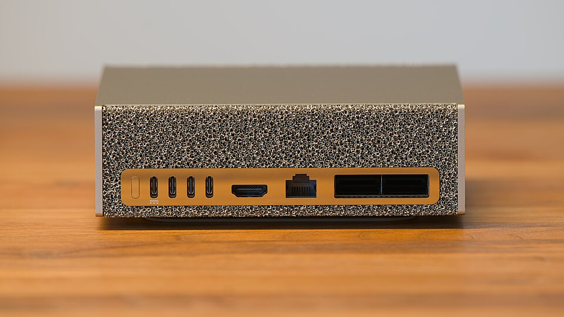
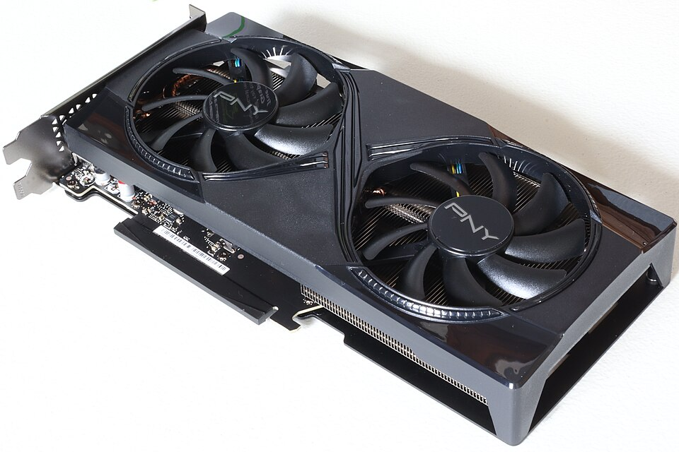

이 기업은? 원래 게임용 그래픽카드를 만들던 회사인데, 같은 칩이 AI를 학습시키는 계산에 아주 잘 맞아서 지금은 데이터센터용 AI 반도체가 매출의 대부분을 차지해요. 칩만 파는 게 아니라 개발자들이 그 칩을 쉽게 쓰게 해 주는 소프트웨어(CUDA)까지 함께 갖춘 것이 강점이에요. 공장 없이 설계만 하고, 생산은 TSMC 같은 회사에 맡겨요.
핵심 정보 대표
콜렛 크레스 임시 CEO (2026년 11월~, 최고재무책임자 겸임)
무엇을 하는 기업인가요? 칸에 마우스를 올리거나 누르면 자세한 설명을 볼 수 있어요.
데이터센터 AI 학습·추론용 GPU와 서버 시스템 자세히 보기 
사진: Daniel Lu (User:dllu) · CC BY-SA 4.0 · 위키미디어 커먼즈 데이터센터 AI를 학습시키고 돌리는 데 쓰는 GPU와, 이 칩 여러 개를 묶은 서버 시스템을 팔아요. 매출의 90% 가까이가 여기서 나와요.
대표 예 블랙웰·루빈 GPU, DGX 서버, 네트워크 장비
게임 지포스 그래픽카드 자세히 보기 
사진: FreeMediaKid! · CC BY-SA 4.0 · 위키미디어 커먼즈 게임 엔비디아가 처음 시작한 사업으로, 게임을 실감 나게 보여 주는 그래픽카드예요.
대표 예 지포스 RTX 그래픽카드
전문가용 그래픽 디자인·영상 작업용 GPU 자세히 보기 전문가용 그래픽 영화 특수효과, 건축 설계, 3D 디자인을 하는 전문가용 그래픽 칩과 소프트웨어예요.
대표 예 RTX 프로 GPU, 옴니버스
자동차 자율주행·차량용 AI 칩 자세히 보기 자동차 자율주행차의 두뇌가 되는 칩과 소프트웨어를 자동차 회사에 팔아요. 로봇용 AI 칩도 같은 흐름이에요.
대표 예 드라이브 토르 칩, 젯슨(로봇)
숫자로 보기 원화 금액은 1달러 = 1,339.4원(2026년 11월 20일 유럽중앙은행 기준환율)으로 환산한 대략적인 값이에요.
어디서 돈을 버나요? 데이터센터 89.7%
게임 7.4%
전문가용 그래픽 1.5%
자동차 1.1%
기타 (OEM 등) 0.3%
2026 회계연도(2025년 2월~2026년 1월) 사업별 매출 기준이에요. AI용 데이터센터 매출이 90%에 가까워요.
실적 흐름 회계연도별 (최근 5년) 분기별 (최근 8분기)
달러 원화로 보기
엔비디아의 회계연도는 매년 1월 말에 끝나요. 그래서 2026 회계연도는 대부분 2025년이에요.
걸어온 길 1993 젠슨 황 등이 설립
1999 첫 GPU 지포스 256 출시, 나스닥 상장
2006 GPU로 범용 계산을 하는 CUDA 공개
2012 엔비디아 GPU로 학습한 AI가 이미지 인식 대회 우승, AI 시대의 출발점
2020 네트워크 회사 멜라녹스 인수
2023 AI 붐으로 시가총액 1조 달러 돌파
2025 세계 최초로 시가총액 4조·5조 달러 돌파
2026 젠슨 황 CEO 사임, 콜렛 크레스가 임시 CEO를 맡음
출처: 실적 SEC EDGAR 자동 수집, 엔비디아 2026 회계연도 실적 발표 · 환율 1달러 = 1,339.4원(2026년 11월 20일 유럽중앙은행 기준환율) · 마지막 업데이트: 2026년 11월 22일